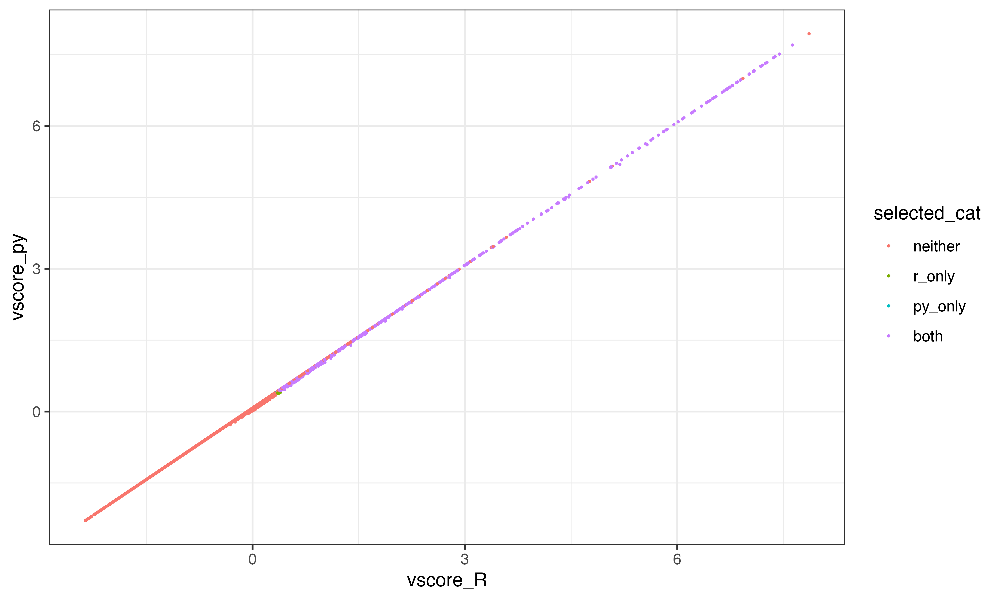
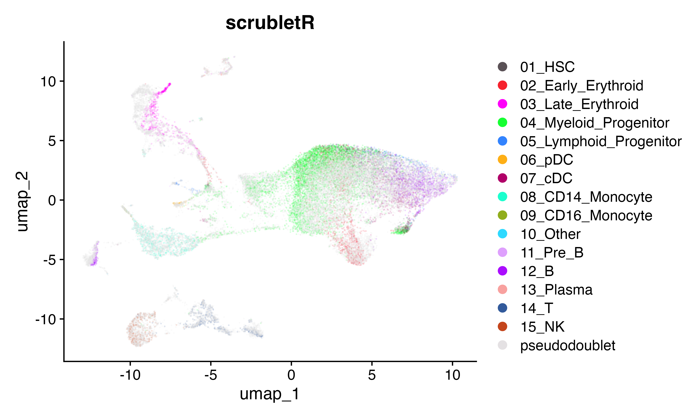
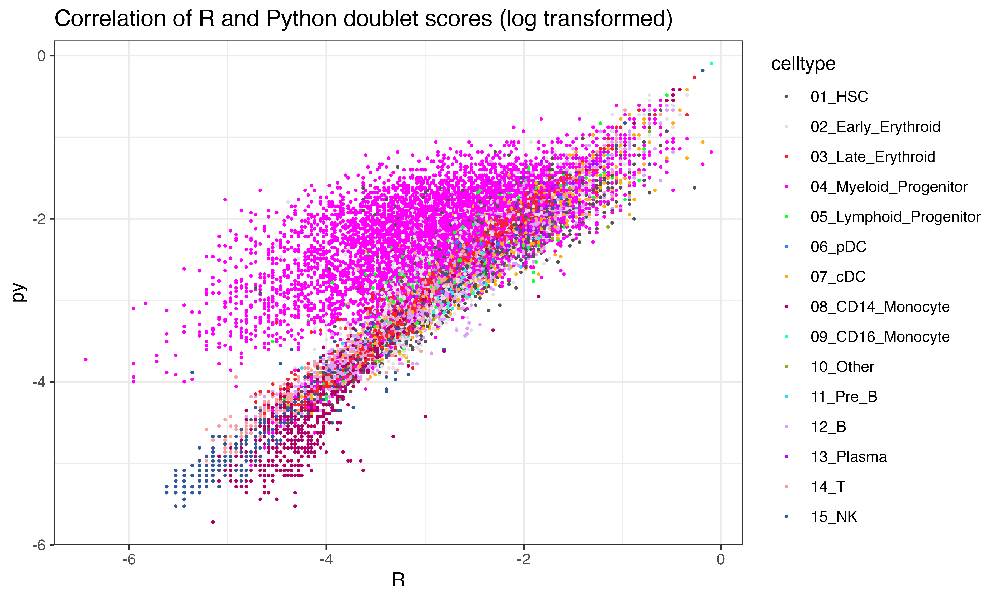

Implementing Scrublet in R
2024-02-02
ImplementationHassles.RmdInstallation of packages
Note that this notebook was run using Rstudio enabling both R and Python environments to be maintained throughout.
Installing scrubletR
You will need to have the devtools package installed…
devtools::install_github("furlan-lab/scrubletR")Loading reticulate
Not for the faint of heart… You can read about getting python working from within R [here] (https://rstudio.github.io/reticulate/). You can either activate your reticulate environment and use ‘pip install scrublet’ to install scrublet or try from R as below. I use conda (reluctantly) and could not get it to install from in R
library(reticulate)
py_config()
py_install("scrublet")I had to do this in the terminal after creating a new conda environment called ‘reticulate’.
Regardless of how you do it, you can check that it is installed using this from R. If you are successful, you will get no output.
py_run_string("import scrublet")Failure will look something like this
py_run_string("import scrubletoops")Comparing Implementations
Ok with working R and python versions of Scrublet, let’s go over the differences. First let’s load data
Load data
suppressPackageStartupMessages({
library(viewmastRust)
library(Seurat)
library(scCustomize)
library(Matrix)
})
if(grepl("^gizmo", Sys.info()["nodename"])){
ROOT_DIR2<-"/fh/fast/furlan_s/grp/data/ddata/BM_data"
} else {
ROOT_DIR2<-"/Users/sfurlan/Library/CloudStorage/OneDrive-SharedLibraries-FredHutchinsonCancerCenter/Furlan_Lab - General/experiments/patient_marrows/aggr/cds/indy"
}
#query dataset
seuP<-readRDS(file.path(ROOT_DIR2, "220831_WC1.RDS"))
DimPlot_scCustom(seuP)
#counts_matrix<-t(seuP@assays$RNA@counts[,1:2000])
counts_matrix<-t(seuP@assays$RNA@counts)First step
The first step in scrublet data processing is size factor normalization. Let’s see how the normalized counts compare across the two implementations. In the next block, I have run the scrublet pipeline through normalization and saved the counts in the R environment as “py_E_obs_norm”
import numpy as np
import scrublet as scr
scrub = scr.Scrublet(r.counts_matrix)
##set params
synthetic_doublet_umi_subsampling=1.0
use_approx_neighbors=True
distance_metric='euclidean'
get_doublet_neighbor_parents=False
min_counts=3
min_cells=3
min_gene_variability_pctl=85
log_transform=False
mean_center=True,
normalize_variance=True
n_prin_comps=30
svd_solver='arpack'
verbose=True
random_state = 0
#clear data in object
scrub._E_sim = None
scrub._E_obs_norm = None
scrub._E_sim_norm = None
scrub._gene_filter = np.arange(scrub._E_obs.shape[1])
#run normalize
scr.pipeline_normalize(scrub)
#capture size factor normalized counts
r.py_E_obs_norm = scrub._E_obs_norm.dataRun scrubletR size factor normalization
To see how the sets of counts compare, we can similarly run scrubletR normalization and correlate a sample (n=5000) of the log transformed counts using ggplot. Unsurprisingly they are not different.
#In R
#set params
synthetic_doublet_umi_subsampling = 1.0
use_approx_neighbors = TRUE
distance_metric = 'euclidean'
get_doublet_neighbor_parents = FALSE
min_counts = 3
min_cells = 3
min_gene_variability_pctl = 85
log_transform = FALSE
mean_center = T
normalize_variance = T
n_prin_comps = 30
verbose = TRUE
#instantiate object
scr<-Scrublet$new(counts_matrix = counts_matrix)
scr$pipeline_normalize()
ix<-sample(1:length(scr$E_obs_norm@x), 5000)
ggplot(data.frame(x=log(scr$E_obs_norm@x[ix]), y = log(py_E_obs_norm[ix])), aes(x=x, y=y))+geom_point(size = 0.01)+xlab("scrubletR size-factor normalized counts")+ylab("scrublet (python) size-factor normalized counts")+theme_bw()
Second step
Next in the pipeline is to select a subset of features with the highest variable expression. The default is set to find the set of features that exhibit expression variance in the above the 85th percentile as measured using the v-statistic.
genefilter = scr.filter_genes(scrub._E_obs_norm,
min_counts=min_counts,
min_cells=min_cells,
min_vscore_pctl=min_gene_variability_pctl, show_vscore_plot=False)
v_scores, CV_eff, CV_input, gene_ix, mu_gene, FF_gene, a, b = scr.get_vscores(scrub._E_obs_norm)
r.py_vscores = v_scores
min_vscore_pctl=min_gene_variability_pctl
ix2 = v_scores>0
v_scores = v_scores[ix2]
gene_ix = gene_ix[ix2]
mu_gene = mu_gene[ix2]
FF_gene = FF_gene[ix2]
min_vscore = np.percentile(v_scores, min_vscore_pctl)
final_ix = (((scrub._E_obs_norm[:,gene_ix] >= min_counts).sum(0).A.squeeze() >= min_cells) & (v_scores >= min_vscore))
#import inspect
#lines = inspect.getsource(scr.filter_genes)
#print(lines)Problem #1
V-scores are slightly different between R and python. The correlation is pretty good howewever and this likely won’t affect performance too much
#scr$pipeline_get_gene_filter()
vscores_result<-get_vscores(scr$E_obs_norm)
Vscores <- as.numeric(vscores_result$v_scores)
# ggplot(data.frame(x=log(Vscores), y = log(py_vscores)), aes(x=x, y=y))+geom_point(size = 0.01)+xlab("scrubletR vscores")+ylab("scrublet (python) vscores")+theme_bw()
df<-data.frame(vscore_R=log(Vscores), vscore_py = log(py_vscores), indices_py=1:length(Vscores) %in% (py$gene_ix+1), indices_R=1:length(Vscores) %in% vscores_result$gene_ix)
df$selected_cat<-factor(with(df, 2*indices_py + indices_R + 1))
levels(df$selected_cat)<-c("neither", "both")
#ggplot(df, aes(x=vscore_R, y=vscore_py, color = selected_cat))+geom_point(size = 0.01)+theme_bw()
gene_ix <- vscores_result$gene_ix
mu_gene <- vscores_result$mu_gene
FF_gene <- vscores_result$FF_gene
a <- vscores_result$a
b <- vscores_result$b
ix2 <- Vscores > 0
Vscores <- Vscores[ix2]
gene_ix <- gene_ix[ix2]
mu_gene <- mu_gene[ix2]
FF_gene <- FF_gene[ix2]
min_vscore_pctl=min_gene_variability_pctl
min_vscore <- quantile(Vscores, prob = min_vscore_pctl / 100)
ix <- ((colSums(scr$E_obs_norm[, gene_ix] >= min_counts) >= min_cells) & (Vscores >= min_vscore))
df$selected_R<-ix
df$selected_py<-py$final_ix
df$selected_cat<-factor(with(df, 2*selected_py + selected_R + 1))
levels(df$selected_cat)<-c("neither", "r_only", "py_only", "both")
ggplot(df, aes(x=vscore_R, y=vscore_py, color = selected_cat))+geom_point(size = 0.2)+theme_bw()
table(df$selected_cat)##
## neither r_only py_only both
## 22149 10 5 2472Highly variant features using R method
scr$pipeline_get_gene_filter(plot = TRUE)
scr$pipeline_apply_gene_filter()Simulating doublets
sim_doublet_ratio = 2.0
synthetic_doublet_umi_subsampling = 1.0
scr$simulate_doublets(sim_doublet_ratio=sim_doublet_ratio, synthetic_doublet_umi_subsampling=synthetic_doublet_umi_subsampling)
scr$pipeline_normalize(postnorm_total=1e6)scr.pipeline_get_gene_filter(scrub)
scr.pipeline_apply_gene_filter(scrub)
scrub.simulate_doublets(sim_doublet_ratio=scrub.sim_doublet_ratio, synthetic_doublet_umi_subsampling=synthetic_doublet_umi_subsampling)
scr.pipeline_normalize(scrub, postnorm_total=1e6)
r.py_Esimnorm = scrub._E_sim_norm
gene_filter = scrub._gene_filter
r.py_E_obs_norm = scrub._E_obs_norm
import copy
scrub_preZ = copy.deepcopy(scrub)#Let’s umap
Here we will brind the pseudo doublets with the original count matrix and visualize using UMAP across the two implemnetations. They look similar.
library(magrittr)
rcounts<-t(rbind(scr$E_obs_norm, scr$E_sim_norm))
rownames(rcounts)<-rownames(seuP)[scr$gene_filter]
colnames(rcounts)<-1:dim(rcounts)[2]
seuR<-CreateSeuratObject(rcounts, meta.data = data.frame(celltype=c(as.character(seuP$celltype), rep("pseudodoublet", length(seuP$celltype)*2)), row.names = colnames(rcounts)))
seuR <-NormalizeData(seuR) %>% FindVariableFeatures(nfeatures = 1000) %>% ScaleData() %>% RunPCA(npcs = 50)
ElbowPlot(seuR, 50) 
seuR<- FindNeighbors(seuR, dims = 1:30) %>% FindClusters() %>% RunUMAP(dims = 1:30)## Modularity Optimizer version 1.3.0 by Ludo Waltman and Nees Jan van Eck
##
## Number of nodes: 41742
## Number of edges: 1409152
##
## Running Louvain algorithm...
## Maximum modularity in 10 random starts: 0.8846
## Number of communities: 27
## Elapsed time: 9 seconds
DimPlot(seuR, group.by = "celltype", cols = as.character(pals::polychrome(20))[c(1,3:16,2)], alpha = 0.1)+ggtitle("scrubletR")
pycounts<-t(rbind(py_E_obs_norm, py_Esimnorm))
rownames(pycounts)<-rownames(seuP)[py$gene_filter]
colnames(pycounts)<-1:dim(pycounts)[2]
seuPy<-CreateSeuratObject(pycounts, meta.data = data.frame(celltype=c(as.character(seuP$celltype), rep("pseudodoublet", length(seuP$celltype)*2)), row.names = colnames(pycounts)))
seuPy <-NormalizeData(seuPy) %>% FindVariableFeatures(nfeatures = 1000) %>% ScaleData() %>% RunPCA(npcs = 50)
ElbowPlot(seuPy, 50) 
seuPy<- FindNeighbors(seuPy, dims = 1:40) %>% FindClusters() %>% RunUMAP(dims = 1:40)## Modularity Optimizer version 1.3.0 by Ludo Waltman and Nees Jan van Eck
##
## Number of nodes: 41742
## Number of edges: 1477580
##
## Running Louvain algorithm...
## Maximum modularity in 10 random starts: 0.8791
## Number of communities: 25
## Elapsed time: 9 seconds
DimPlot(seuPy, group.by = "celltype", cols = as.character(pals::polychrome(20))[c(1,3:16,2)], alpha = 0.1)+ggtitle("Scrublet (python)")
Z-scoring
The default scrublet pathway then performs a z-scaling procedure across the data
## (13914, 2477)step by step
####Step 1 calculate gene mean and stdev - look pretty similar
gene_mean = as.numeric(colMeans(scr$E_obs_norm)) #######changed to column - IS CORRECT
gene_stdev = as.numeric(sqrt(scrubletR:::sparse_var(scr$E_obs_norm, axis = 2)))
# print_py(gene_mean)
# print_py(gene_stdev)
# print_py(py$gene_means[1,])
# print_py(py$gene_stdevs)
ggplot(data.frame(mean=log(c(gene_mean, py$gene_means[1,])), stdev=log(c(gene_stdev, py$gene_stdevs)), impl=c(rep("R", length(gene_mean)), rep("Py", length(py$gene_means)))), aes(x=mean, fill=impl))+geom_density()
ggplot(data.frame(mean=log(c(gene_mean, py$gene_means[1,])), stdev=log(c(gene_stdev, py$gene_stdevs)), impl=c(rep("R", length(gene_mean)), rep("Py", length(py$gene_means)))), aes(x=stdev, fill=impl))+geom_density()
#(same as py)####Step 2 subtract gene means
preZ_Eobs_norm = scrub_preZ._E_obs_norm
step2 = preZ_Eobs_norm - preZ_Eobs_norm.mean(0) # this step is easy in pythonHere’s what you get in R with similarly structured code
step2 = scr$E_obs_norm - colMeans(scr$E_obs_norm) # this doesn't work as intended in R
colnames(step2)<-NULL
step2[1:10,1:10]## 10 x 10 Matrix of class "dgeMatrix"
## [,1] [,2] [,3] [,4] [,5]
## [1,] -1.0294501 -1.2815507 -6.4029111 -3.3582206 -2.5414889
## [2,] -0.1149148 -2.7254183 -47.6427631 98.4509273 -202.0442150
## [3,] -0.5069102 -26.1563220 -7.0442071 -4.8296559 -158.6784346
## [4,] -47.4869206 -4.9858189 -0.4297543 -57.3229486 -0.5091509
## [5,] -2.7516240 -483.2102680 -76.2160384 -7.5710177 -3.4020053
## [6,] -2.8772205 -6.8049528 -12.9709248 -0.4681139 -0.4705826
## [7,] -28.4278954 -292.2953822 -0.4011992 -2117.7123348 -0.5806434
## [8,] -0.4037443 -2.1122108 -0.3693642 -19.3384333 -0.5864083
## [9,] -1.5197192 -0.5371283 -0.5010018 -27.5754728 -1.9881826
## [10,] -0.7596383 -1.8024743 -34.4138321 -0.3174581 -45.4030655
## [,6] [,7] [,8] [,9] [,10]
## [1,] -0.66006144 -3.7521545 -3.5579435 -168.4110083 -12.7967736
## [2,] -0.51114543 -15.4614631 -68.8341475 -161.6263527 -2.8791465
## [3,] -1.48972359 -430.6828817 -9.0642243 -8.6457439 -171.5477283
## [4,] -0.52020704 -0.5181809 -335.3768468 -32.3952104 -1.3697266
## [5,] -0.17273834 -0.6467012 -4.0768245 -99.6551555 -19.9285008
## [6,] -125.70835424 -2.4425953 -259.9421287 -9.7549442 -0.3627671
## [7,] -0.09408157 -10.9057669 -15.1845578 -0.7617508 -156.7997910
## [8,] -8.04110572 -41.6719108 -0.5136189 -17.0759625 -0.2073675
## [9,] -0.95256054 417.9444652 -39.4990708 -0.4441260 -1.8115952
## [10,] -206.12649988 128.0461667 -9.9702641 -224.8581777 -5.8393548
py$step2[1:10,1:10]## [,1] [,2] [,3] [,4] [,5] [,6] [,7]
## [1,] -1.02945 -0.1149148 -0.5069102 -47.48692 -2.751624 -2.87722 -28.4279
## [2,] -1.02945 -0.1149148 -0.5069102 52.62320 -2.751624 -2.87722 -28.4279
## [3,] -1.02945 -0.1149148 -0.5069102 -47.48692 -2.751624 -2.87722 -28.4279
## [4,] -1.02945 -0.1149148 -0.5069102 -47.48692 -2.751624 -2.87722 -28.4279
## [5,] -1.02945 -0.1149148 -0.5069102 -47.48692 -2.751624 -2.87722 -28.4279
## [6,] -1.02945 -0.1149148 -0.5069102 -47.48692 -2.751624 -2.87722 -28.4279
## [7,] -1.02945 -0.1149148 -0.5069102 -47.48692 -2.751624 -2.87722 -28.4279
## [8,] -1.02945 -0.1149148 -0.5069102 -47.48692 -2.751624 -2.87722 -28.4279
## [9,] -1.02945 -0.1149148 -0.5069102 -47.48692 -2.751624 -2.87722 389.8072
## [10,] -1.02945 -0.1149148 -0.5069102 -47.48692 -2.751624 -2.87722 115.0030
## [,8] [,9] [,10]
## [1,] -0.4037443 -1.519719 -0.7596383
## [2,] -0.4037443 -1.519719 -0.7596383
## [3,] -0.4037443 -1.519719 -0.7596383
## [4,] -0.4037443 -1.519719 -0.7596383
## [5,] -0.4037443 -1.519719 -0.7596383
## [6,] -0.4037443 -1.519719 -0.7596383
## [7,] -0.4037443 -1.519719 -0.7596383
## [8,] -0.4037443 -1.519719 -0.7596383
## [9,] -0.4037443 -1.519719 -0.7596383
## [10,] -0.4037443 -1.519719 -0.7596383turns out R has some peculiarities and for subtracting a vector element-wise from the column values of matrix we must first create a matrix duplicating the desired subtracted values down all the rows. Simply subtracting the vector (in this case of gene means from each column (gene) of the matrix cannot be done using simply matrix - vector) In python, the subtraction using numpy is much easier…
sm<-matrix(rep(colMeans(scr$E_obs_norm), each = dim(scr$E_obs_norm)[1]), nrow=dim(scr$E_obs_norm)[1])
step2 = scr$E_obs_norm - sm
colnames(step2)<-NULL
step2[1:10,1:10]## 10 x 10 Matrix of class "dgeMatrix"
## [,1] [,2] [,3] [,4] [,5] [,6] [,7]
## [1,] -1.02945 -0.1149148 -0.5069102 -47.48692 -2.751624 -2.87722 -28.4279
## [2,] -1.02945 -0.1149148 -0.5069102 52.62320 -2.751624 -2.87722 -28.4279
## [3,] -1.02945 -0.1149148 -0.5069102 -47.48692 -2.751624 -2.87722 -28.4279
## [4,] -1.02945 -0.1149148 -0.5069102 -47.48692 -2.751624 -2.87722 -28.4279
## [5,] -1.02945 -0.1149148 -0.5069102 -47.48692 -2.751624 -2.87722 -28.4279
## [6,] -1.02945 -0.1149148 -0.5069102 -47.48692 -2.751624 -2.87722 -28.4279
## [7,] -1.02945 -0.1149148 -0.5069102 -47.48692 -2.751624 -2.87722 -28.4279
## [8,] -1.02945 -0.1149148 -0.5069102 -47.48692 -2.751624 -2.87722 -28.4279
## [9,] -1.02945 -0.1149148 -0.5069102 -47.48692 -2.751624 -2.87722 389.8072
## [10,] -1.02945 -0.1149148 -0.5069102 -47.48692 -2.751624 -2.87722 115.0030
## [,8] [,9] [,10]
## [1,] -0.4037443 -1.519719 -0.7596383
## [2,] -0.4037443 -1.519719 -0.7596383
## [3,] -0.4037443 -1.519719 -0.7596383
## [4,] -0.4037443 -1.519719 -0.7596383
## [5,] -0.4037443 -1.519719 -0.7596383
## [6,] -0.4037443 -1.519719 -0.7596383
## [7,] -0.4037443 -1.519719 -0.7596383
## [8,] -0.4037443 -1.519719 -0.7596383
## [9,] -0.4037443 -1.519719 -0.7596383
## [10,] -0.4037443 -1.519719 -0.7596383
py$step2[1:10,1:10]## [,1] [,2] [,3] [,4] [,5] [,6] [,7]
## [1,] -1.02945 -0.1149148 -0.5069102 -47.48692 -2.751624 -2.87722 -28.4279
## [2,] -1.02945 -0.1149148 -0.5069102 52.62320 -2.751624 -2.87722 -28.4279
## [3,] -1.02945 -0.1149148 -0.5069102 -47.48692 -2.751624 -2.87722 -28.4279
## [4,] -1.02945 -0.1149148 -0.5069102 -47.48692 -2.751624 -2.87722 -28.4279
## [5,] -1.02945 -0.1149148 -0.5069102 -47.48692 -2.751624 -2.87722 -28.4279
## [6,] -1.02945 -0.1149148 -0.5069102 -47.48692 -2.751624 -2.87722 -28.4279
## [7,] -1.02945 -0.1149148 -0.5069102 -47.48692 -2.751624 -2.87722 -28.4279
## [8,] -1.02945 -0.1149148 -0.5069102 -47.48692 -2.751624 -2.87722 -28.4279
## [9,] -1.02945 -0.1149148 -0.5069102 -47.48692 -2.751624 -2.87722 389.8072
## [10,] -1.02945 -0.1149148 -0.5069102 -47.48692 -2.751624 -2.87722 115.0030
## [,8] [,9] [,10]
## [1,] -0.4037443 -1.519719 -0.7596383
## [2,] -0.4037443 -1.519719 -0.7596383
## [3,] -0.4037443 -1.519719 -0.7596383
## [4,] -0.4037443 -1.519719 -0.7596383
## [5,] -0.4037443 -1.519719 -0.7596383
## [6,] -0.4037443 -1.519719 -0.7596383
## [7,] -0.4037443 -1.519719 -0.7596383
## [8,] -0.4037443 -1.519719 -0.7596383
## [9,] -0.4037443 -1.519719 -0.7596383
## [10,] -0.4037443 -1.519719 -0.7596383Step 3 complete zscoring
Looks good
step3<-t(scrubletR:::sparse_multiply(t(step2), 1 / gene_stdev))
step3[1:10,1:10]## 10 x 10 Matrix of class "dgeMatrix"
## [,1] [,2] [,3] [,4] [,5] [,6]
## [1,] -0.0501001 -0.01529958 -0.03374151 -0.3482865 -0.07549728 -0.07793504
## [2,] -0.0501001 -0.01529958 -0.03374151 0.3859579 -0.07549728 -0.07793504
## [3,] -0.0501001 -0.01529958 -0.03374151 -0.3482865 -0.07549728 -0.07793504
## [4,] -0.0501001 -0.01529958 -0.03374151 -0.3482865 -0.07549728 -0.07793504
## [5,] -0.0501001 -0.01529958 -0.03374151 -0.3482865 -0.07549728 -0.07793504
## [6,] -0.0501001 -0.01529958 -0.03374151 -0.3482865 -0.07549728 -0.07793504
## [7,] -0.0501001 -0.01529958 -0.03374151 -0.3482865 -0.07549728 -0.07793504
## [8,] -0.0501001 -0.01529958 -0.03374151 -0.3482865 -0.07549728 -0.07793504
## [9,] -0.0501001 -0.01529958 -0.03374151 -0.3482865 -0.07549728 -0.07793504
## [10,] -0.0501001 -0.01529958 -0.03374151 -0.3482865 -0.07549728 -0.07793504
## [,7] [,8] [,9] [,10]
## [1,] -0.2614774 -0.03381616 -0.07002316 -0.04718872
## [2,] -0.2614774 -0.03381616 -0.07002316 -0.04718872
## [3,] -0.2614774 -0.03381616 -0.07002316 -0.04718872
## [4,] -0.2614774 -0.03381616 -0.07002316 -0.04718872
## [5,] -0.2614774 -0.03381616 -0.07002316 -0.04718872
## [6,] -0.2614774 -0.03381616 -0.07002316 -0.04718872
## [7,] -0.2614774 -0.03381616 -0.07002316 -0.04718872
## [8,] -0.2614774 -0.03381616 -0.07002316 -0.04718872
## [9,] 3.5854137 -0.03381616 -0.07002316 -0.04718872
## [10,] 1.0577878 -0.03381616 -0.07002316 -0.04718872
py$step3[1:10,1:10]## [,1] [,2] [,3] [,4] [,5] [,6]
## [1,] -0.0501001 -0.01529958 -0.03374151 -0.3482865 -0.07549728 -0.07793504
## [2,] -0.0501001 -0.01529958 -0.03374151 0.3859579 -0.07549728 -0.07793504
## [3,] -0.0501001 -0.01529958 -0.03374151 -0.3482865 -0.07549728 -0.07793504
## [4,] -0.0501001 -0.01529958 -0.03374151 -0.3482865 -0.07549728 -0.07793504
## [5,] -0.0501001 -0.01529958 -0.03374151 -0.3482865 -0.07549728 -0.07793504
## [6,] -0.0501001 -0.01529958 -0.03374151 -0.3482865 -0.07549728 -0.07793504
## [7,] -0.0501001 -0.01529958 -0.03374151 -0.3482865 -0.07549728 -0.07793504
## [8,] -0.0501001 -0.01529958 -0.03374151 -0.3482865 -0.07549728 -0.07793504
## [9,] -0.0501001 -0.01529958 -0.03374151 -0.3482865 -0.07549728 -0.07793504
## [10,] -0.0501001 -0.01529958 -0.03374151 -0.3482865 -0.07549728 -0.07793504
## [,7] [,8] [,9] [,10]
## [1,] -0.2614774 -0.03381616 -0.07002316 -0.04718872
## [2,] -0.2614774 -0.03381616 -0.07002316 -0.04718872
## [3,] -0.2614774 -0.03381616 -0.07002316 -0.04718872
## [4,] -0.2614774 -0.03381616 -0.07002316 -0.04718872
## [5,] -0.2614774 -0.03381616 -0.07002316 -0.04718872
## [6,] -0.2614774 -0.03381616 -0.07002316 -0.04718872
## [7,] -0.2614774 -0.03381616 -0.07002316 -0.04718872
## [8,] -0.2614774 -0.03381616 -0.07002316 -0.04718872
## [9,] 3.5854137 -0.03381616 -0.07002316 -0.04718872
## [10,] 1.0577878 -0.03381616 -0.07002316 -0.04718872
scr$pipeline_zscore()Step 4 PCA
import scipy
from sklearn.decomposition import PCA
X_obs = scrub._E_obs_norm
X_sim = scrub._E_sim_norm
pca = PCA(n_components=n_prin_comps, random_state=random_state, svd_solver=svd_solver).fit(X_obs)
pto = pca.transform(X_obs)
pts = pca.transform(X_sim)
X_obs <- as.matrix(scr$E_obs_norm)
X_sim <- as.matrix(scr$E_sim_norm)
pca <- prcomp_irlba(X_obs, n = n_prin_comps, center = TRUE, scale. = FALSE)
ix<-sample(1:nrow(X_obs), 2000)
ggplot(data.frame(py = abs(py$pto[ix,1]), R = abs(predict(pca, X_obs)[ix,1])), aes(x=R, y=py))+geom_point()+theme_bw()+ggtitle("Correlation of R and Python PC values")
scr$pipeline_pca()
scr$calculate_doublet_scores()
scr$call_doublets()scr.pipeline_pca(scrub)
scrub.calculate_doublet_scores(
use_approx_neighbors=use_approx_neighbors,
distance_metric=distance_metric,
get_doublet_neighbor_parents=get_doublet_neighbor_parents
)## array([0.05098494, 0.08314607, 0.06166561, ..., 0.09076559, 0.11131059,
## 0.20963173])## Automatically set threshold at doublet score = 0.68
## Detected doublet rate = 0.0%
## Estimated detectable doublet fraction = 14.2%
## Overall doublet rate:
## Expected = 10.0%
## Estimated = 0.3%
## array([False, False, False, ..., False, False, False])Interesting that the tumor shows less correlation across the two implementations than other celltypes
ggplot(data.frame(py = log(py$final_doublet), R = log(scr$doublet_scores_obs_), celltype = seuP$celltype), aes(x=R, y=py, color = celltype))+geom_point(size = 0.3)+theme_bw()+ggtitle("Correlation of R and Python doublet scores (log transformed)")+scale_color_manual(values = as.character(pals::polychrome()))
ggplot(data.frame(py = log(py$final_doublet), R = log(scr$doublet_scores_obs_), genotype = seuP$geno), aes(x=R, y=py, color = genotype))+geom_point(size = 0.3, alpha = 0.3)+theme_bw()+ggtitle("Correlation of R and Python doublet scores (log transformed)")
Appendix
## R version 4.3.1 (2023-06-16)
## Platform: aarch64-apple-darwin20 (64-bit)
## Running under: macOS Ventura 13.5.2
##
## Matrix products: default
## BLAS: /Library/Frameworks/R.framework/Versions/4.3-arm64/Resources/lib/libRblas.0.dylib
## LAPACK: /Library/Frameworks/R.framework/Versions/4.3-arm64/Resources/lib/libRlapack.dylib; LAPACK version 3.11.0
##
## locale:
## [1] en_US.UTF-8/en_US.UTF-8/en_US.UTF-8/C/en_US.UTF-8/en_US.UTF-8
##
## time zone: America/Los_Angeles
## tzcode source: internal
##
## attached base packages:
## [1] parallel stats graphics grDevices utils datasets methods
## [8] base
##
## other attached packages:
## [1] magrittr_2.0.3 scCustomize_2.0.1 Seurat_5.0.1 SeuratObject_5.0.1
## [5] sp_2.1-2 viewmastRust_0.1.4 scrubletR_0.1.1 pbmcapply_1.5.1
## [9] ggplot2_3.4.4 irlba_2.3.5.1 RcppAnnoy_0.0.21 R6_2.5.1
## [13] Matrix_1.6-4 reticulate_1.34.0
##
## loaded via a namespace (and not attached):
## [1] fs_1.6.3 matrixStats_1.1.0
## [3] spatstat.sparse_3.0-3 bitops_1.0-7
## [5] lubridate_1.9.3 httr_1.4.7
## [7] RColorBrewer_1.1-3 doParallel_1.0.17
## [9] tools_4.3.1 sctransform_0.4.1
## [11] backports_1.4.1 utf8_1.2.4
## [13] lazyeval_0.2.2 uwot_0.1.16
## [15] GetoptLong_1.0.5 withr_2.5.2
## [17] gridExtra_2.3 progressr_0.14.0
## [19] cli_3.6.1 Biobase_2.60.0
## [21] textshaping_0.3.7 spatstat.explore_3.2-5
## [23] fastDummies_1.7.3 labeling_0.4.3
## [25] prismatic_1.1.1 sass_0.4.8
## [27] spatstat.data_3.0-3 ggridges_0.5.4
## [29] pbapply_1.7-2 pkgdown_2.0.7
## [31] systemfonts_1.0.5 foreign_0.8-86
## [33] dichromat_2.0-0.1 parallelly_1.36.0
## [35] maps_3.4.1.1 pals_1.8
## [37] rstudioapi_0.15.0 generics_0.1.3
## [39] shape_1.4.6 ica_1.0-3
## [41] spatstat.random_3.2-2 dplyr_1.1.4
## [43] ggbeeswarm_0.7.2 fansi_1.0.6
## [45] S4Vectors_0.38.2 abind_1.4-5
## [47] terra_1.7-55 lifecycle_1.0.4
## [49] yaml_2.3.7 snakecase_0.11.1
## [51] SummarizedExperiment_1.30.2 recipes_1.0.8
## [53] Rtsne_0.17 paletteer_1.5.0
## [55] grid_4.3.1 promises_1.2.1
## [57] crayon_1.5.2 miniUI_0.1.1.1
## [59] lattice_0.22-5 cowplot_1.1.1
## [61] mapproj_1.2.11 pillar_1.9.0
## [63] knitr_1.45 ComplexHeatmap_2.16.0
## [65] GenomicRanges_1.52.1 rjson_0.2.21
## [67] boot_1.3-28.1 future.apply_1.11.0
## [69] codetools_0.2-19 leiden_0.4.3.1
## [71] glue_1.6.2 MatrixExtra_0.1.14
## [73] data.table_1.14.10 float_0.3-1
## [75] vctrs_0.6.5 png_0.1-8
## [77] spam_2.10-0 gtable_0.3.4
## [79] rematch2_2.1.2 assertthat_0.2.1
## [81] cachem_1.0.8 gower_1.0.1
## [83] xfun_0.41 S4Arrays_1.0.6
## [85] mime_0.12 prodlim_2023.08.28
## [87] survival_3.5-7 timeDate_4022.108
## [89] SingleCellExperiment_1.22.0 iterators_1.0.14
## [91] hardhat_1.3.0 lava_1.7.3
## [93] ellipsis_0.3.2 fitdistrplus_1.1-11
## [95] ROCR_1.0-11 ipred_0.9-14
## [97] nlme_3.1-164 GenomeInfoDb_1.36.4
## [99] rprojroot_2.0.4 bslib_0.6.1
## [101] vipor_0.4.5 KernSmooth_2.23-22
## [103] rpart_4.1.23 colorspace_2.1-0
## [105] BiocGenerics_0.46.0 Hmisc_5.1-1
## [107] nnet_7.3-19 ggrastr_1.0.2
## [109] tidyselect_1.2.0 compiler_4.3.1
## [111] htmlTable_2.4.2 desc_1.4.2
## [113] DelayedArray_0.26.7 plotly_4.10.3
## [115] checkmate_2.3.1 scales_1.3.0
## [117] lmtest_0.9-40 stringr_1.5.1
## [119] digest_0.6.33 goftest_1.2-3
## [121] spatstat.utils_3.0-4 minqa_1.2.6
## [123] rmarkdown_2.25 XVector_0.40.0
## [125] RhpcBLASctl_0.23-42 htmltools_0.5.7
## [127] pkgconfig_2.0.3 base64enc_0.1-3
## [129] lme4_1.1-35.1 sparseMatrixStats_1.12.2
## [131] MatrixGenerics_1.12.3 highr_0.10
## [133] fastmap_1.1.1 rlang_1.1.2
## [135] GlobalOptions_0.1.2 htmlwidgets_1.6.4
## [137] shiny_1.8.0 DelayedMatrixStats_1.22.6
## [139] farver_2.1.1 jquerylib_0.1.4
## [141] zoo_1.8-12 jsonlite_1.8.8
## [143] ModelMetrics_1.2.2.2 RCurl_1.98-1.13
## [145] Formula_1.2-5 GenomeInfoDbData_1.2.10
## [147] dotCall64_1.1-1 patchwork_1.1.3
## [149] munsell_0.5.0 Rcpp_1.0.11
## [151] stringi_1.8.2 pROC_1.18.5
## [153] zlibbioc_1.46.0 MASS_7.3-60
## [155] plyr_1.8.9 listenv_0.9.0
## [157] ggrepel_0.9.4 forcats_1.0.0
## [159] deldir_2.0-2 splines_4.3.1
## [161] tensor_1.5 circlize_0.4.15
## [163] igraph_1.5.1 spatstat.geom_3.2-7
## [165] RcppHNSW_0.5.0 reshape2_1.4.4
## [167] stats4_4.3.1 evaluate_0.23
## [169] ggprism_1.0.4 nloptr_2.0.3
## [171] foreach_1.5.2 httpuv_1.6.13
## [173] RANN_2.6.1 tidyr_1.3.0
## [175] purrr_1.0.2 polyclip_1.10-6
## [177] future_1.33.0 clue_0.3-65
## [179] scattermore_1.2 janitor_2.2.0
## [181] xtable_1.8-4 monocle3_1.3.4
## [183] RSpectra_0.16-1 later_1.3.2
## [185] viridisLite_0.4.2 class_7.3-22
## [187] ragg_1.2.6 tibble_3.2.1
## [189] beeswarm_0.4.0 memoise_2.0.1
## [191] IRanges_2.34.1 cluster_2.1.6
## [193] timechange_0.2.0 globals_0.16.2
## [195] caret_6.0-94
getwd()## [1] "/Users/sfurlan/develop/scrubletR/vignettes"